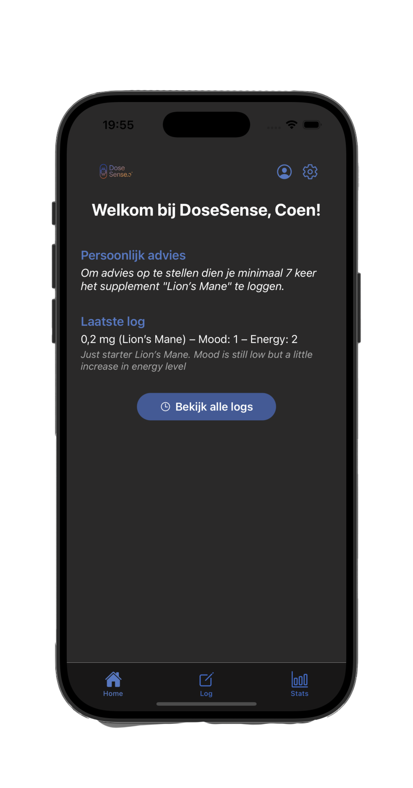
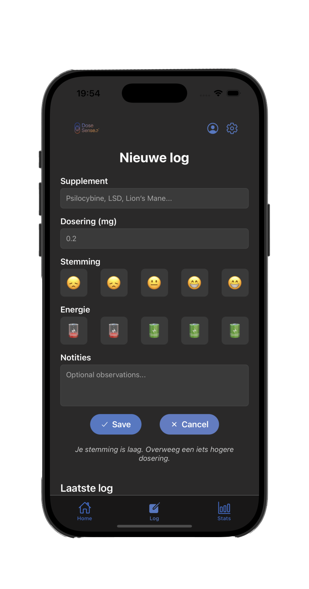
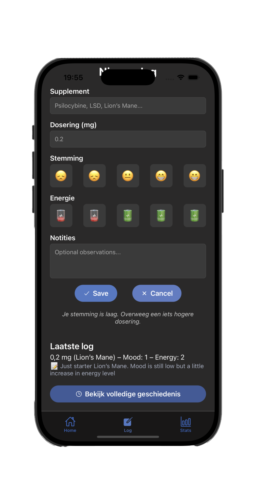
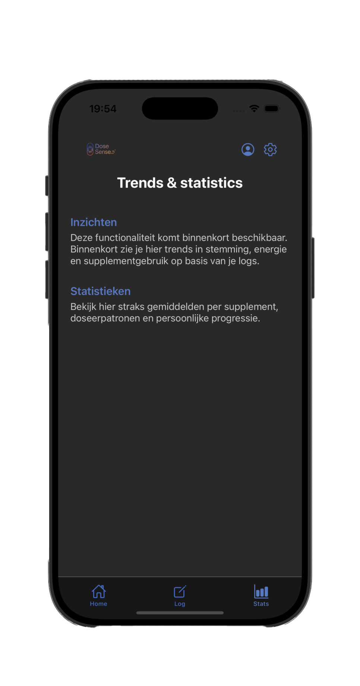

Over DoseSense.ai
DoseSense.ai is een innovatieve app die gebruikers van microdosing een krachtige tool biedt om hun ervaringen te optimaliseren. De app gaat verder dan bestaande oplossingen door gebruik te maken van AI-technologie om persoonlijke aanbevelingen te geven en real-time inzichten te bieden op basis van data uit dosering, stemming, en lichamelijke reacties.
Belangrijke pijlers
- AI-gestuurde inzichten: gepersonaliseerde aanbevelingen.
- Real-time biofeedback: integratie met wearables (toekomst).
- Persoonlijke coaching: digitale microdosing coach.
- Data-analyse: visualisaties en trends in je logs.
Huidige Features
- Dosering en stemming loggen
- Basis AI-aanbevelingen genereren
- Data visualisatie (binnenkort)




Proof of Concept demo
Roadmap & toekomstvisie
- Integratie met Apple Health / wearables
- Slimme notificaties en herinneringen
- Dagboek AI-samenvatting per week
- Community functies en delen van anonieme inzichten
- Default advies voor specifieke supplementen op basis van meerdere gebruikers
Technische structuur Proof of Concept
- Frontend: UI met log-functionaliteit en adviesweergave.
- Backend: Firebase database voor opslag.
- AI-module: Regelgebaseerde aanbevelingen op basis van logs.